Centos7 的安装与配置 - 1
下载镜像
以下内容仅按照我的配置写的，如有不足评论一下。
首先下载Centos7的镜像，这里我用的 阿里云的镜像
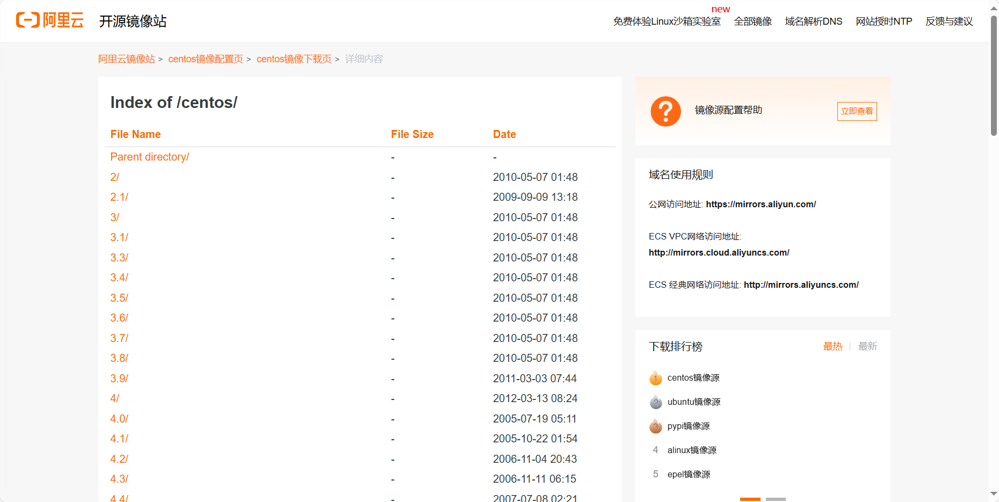
进入 7.9.2009/isos/x86_64/，下载 CentOS-7-x86_64-NetInstall-2009.iso
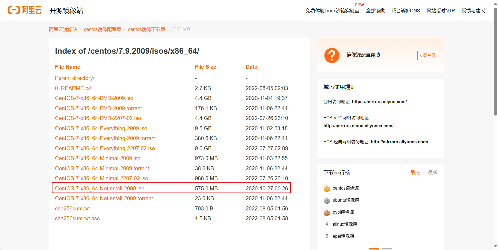
如果打开只有一个 readme 文件，说明这个版本的镜像没有提供下载。
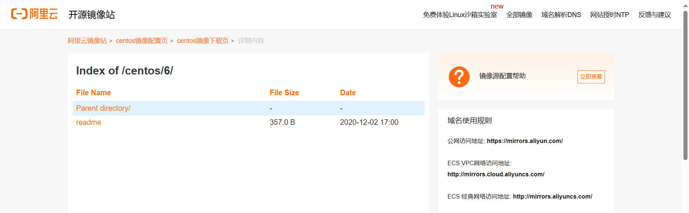
安装
首先打开 VMware，创建新的虚拟机，这里安装到虚拟机里面 (物理机应该也是一样的)
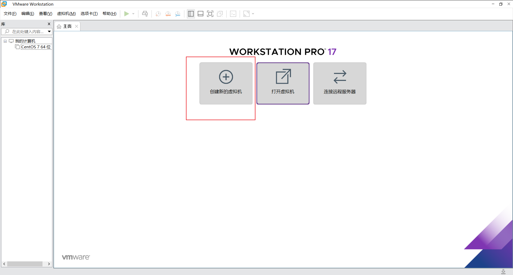
选择自定义(高级)，然后下一步
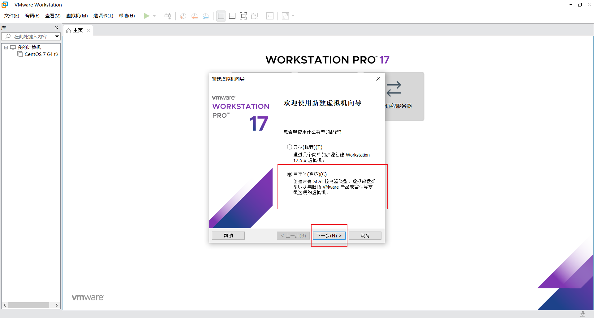
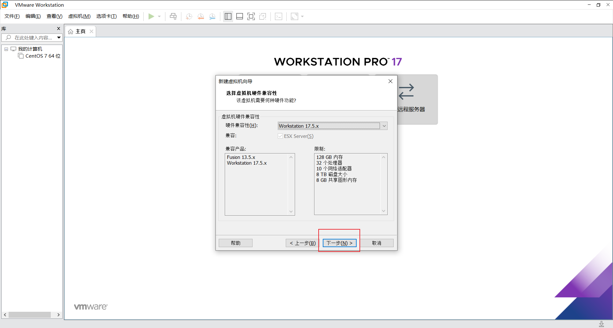
这里选择稍后安装操作系统，然后下一步
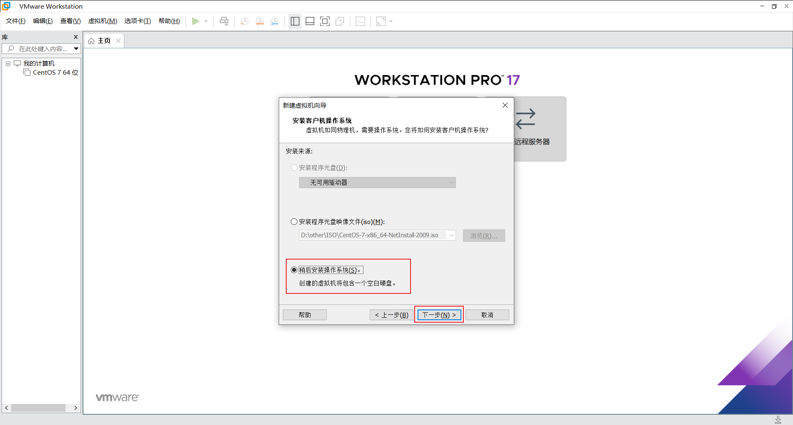
这里选择Centos7 64位
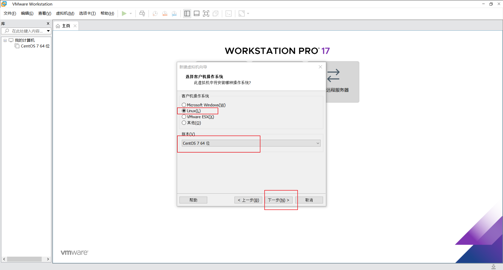
这里可以给虚拟机起名字。
位置选C盘以外的盘，因为最后生成的虚拟机文件比较大(只有一个C盘当我没说…)
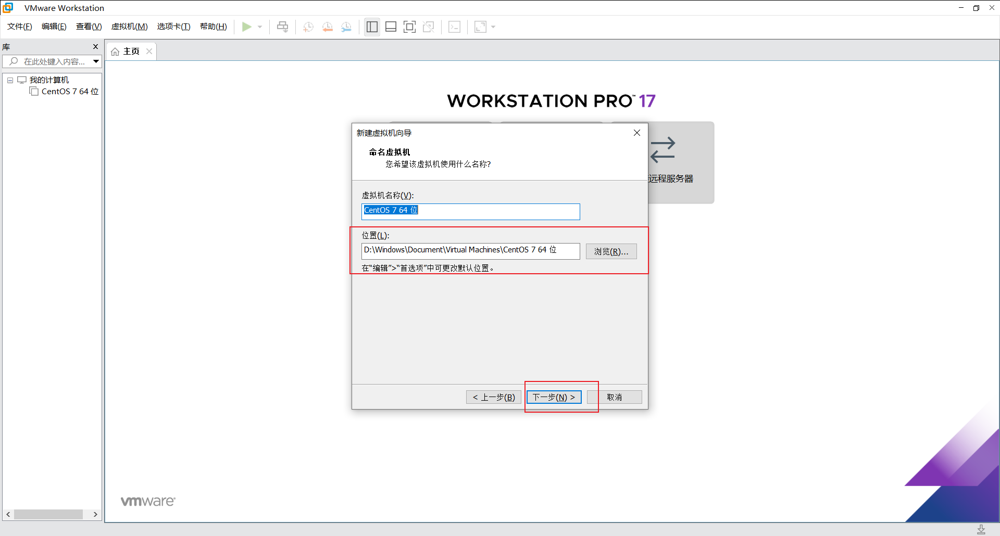
这里可以设置虚拟机的处理器(不懂别瞎选，默认的就行)
这里设置内存(不懂别瞎选，默认的就行)
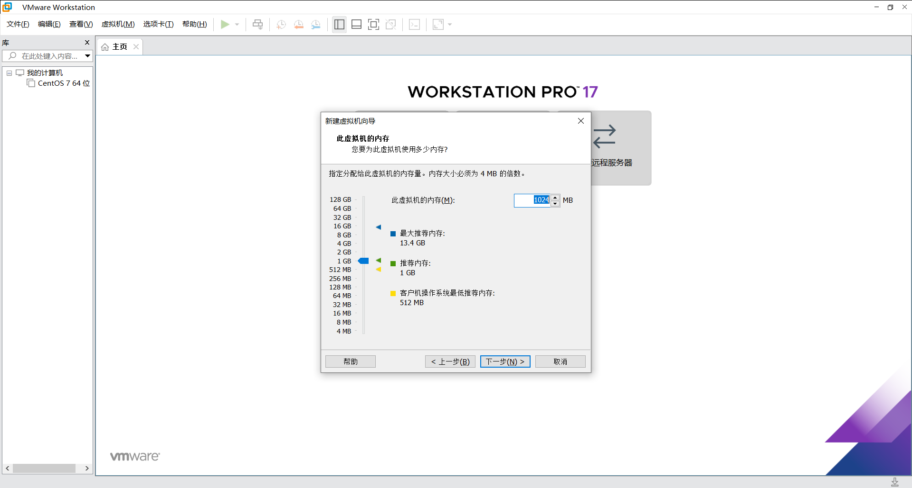
这里建议选默认的 使用网络地址转换(NAT)
后面的默认推荐就可以
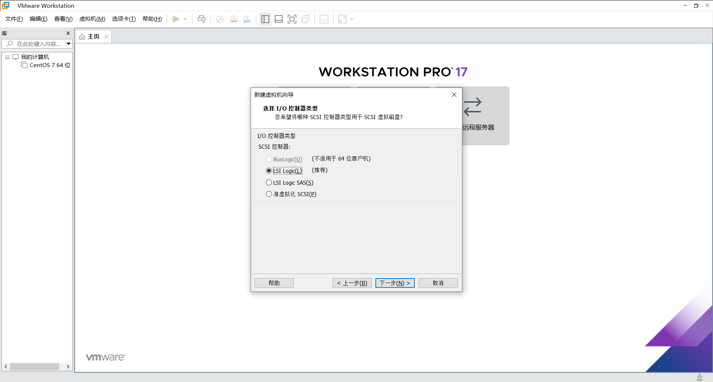
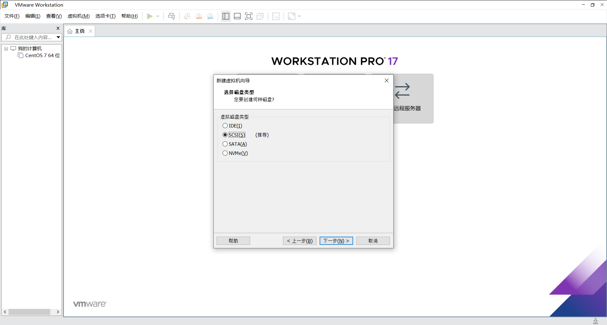
创建新虚拟磁盘，而后下一步
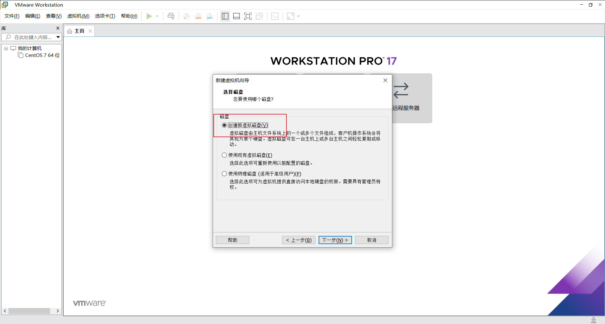
这里可以设置磁盘大小，也就是虚拟机的硬盘大小
选 将虚拟磁盘存储为单个文件，而后下一步
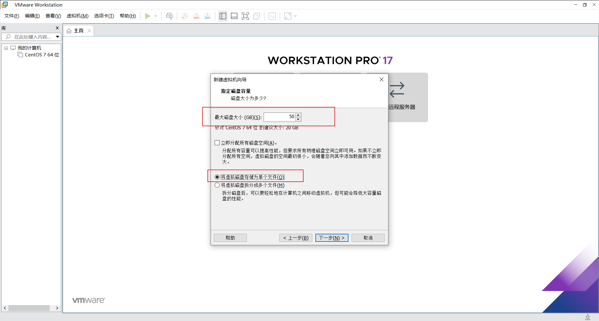
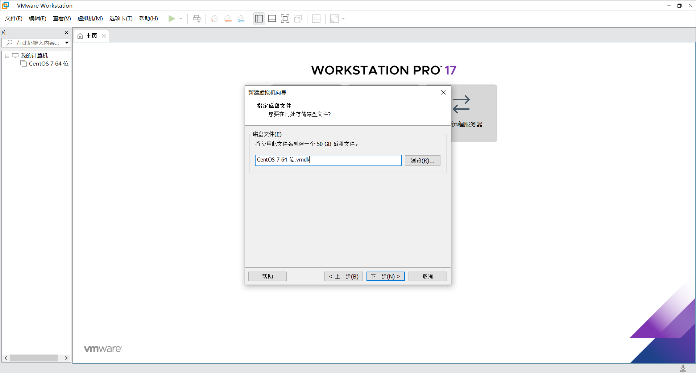
完成！
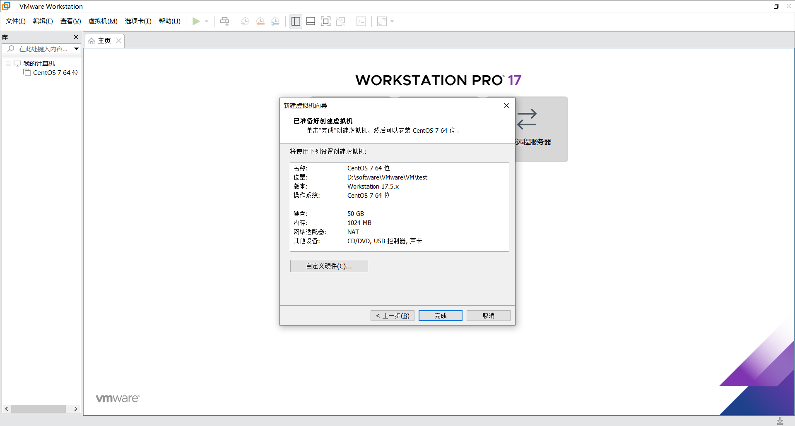
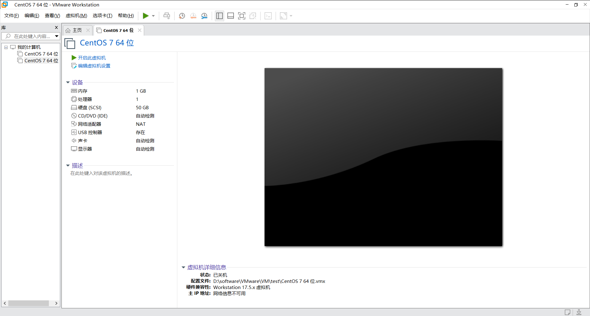
本博客所有文章除特别声明外，均采用 CC BY-NC-SA 4.0 许可协议。转载请注明来源 FlyTeng！
 wechat
wechat alipay
alipay
相关推荐

2024-08-18
Centos7 的安装与配置 - 2
右键标签栏，点击设置 选择 CD/DVD，选择下载好的ISO镜像，点击确定 开机！ 开机之后，用方向键选择 Install Centos7 选项，按回车确认 选择语言 下滑选择安装位置 不会配置的选下面的自动配置分区，而后点击完成 配置安装源 如果配置是灰色的话，就像这样，就是没有连接网络，需要先连一下网络 点击完成回到刚才的页面 点击网络和主机名 连接到网络后，再次配置安装源，将安装源设置为国内的。 http://mirrors.aliyun.com/centos/7/os/x86_64/ 软件选择 这里我选择的是最小安装，方便学习和记录 在安装过程中可以根据需求来判断是否设置root密码或者创建用户 我不需要创建用户，所以我没有创建 漫长的等待…… Centos7！启动！！ 输入你的用户名和密码 没有创建用户的话就只有root用户 这样就装好了~

2024-08-19
换 yum 源
备份原有源配置文件 1sudo mv /etc/yum.repos.d/CentOS-Base.repo /etc/yum.repos.d/CentOS-Base.repo.backup 下载国内源配置文件(这里用的是阿里云的仓库)，并移动到源目录里 12sudo curl -O http://mirrors.aliyun.com/repo/Centos-7.reposudo mv Centos-7.repo /etc/yum.repos.d/CentOS-Base.repo 刷新yum缓存 12sudo yum clean allsudo yum makecache fast 检查是否更换成功 1sudo yum repolist 更新软件包 1yum -y update 至此，换源完成~

2024-08-19
安装并使用 docker-ce
下载 从阿里云下载 docker-ce 仓库，并将仓库文件移动到 /etc/yum.repos.d/ 目录下 12sudo curl -O https://mirrors.aliyun.com/docker-ce/linux/centos/docker-ce.reposudo mv docker-ce.repo /etc/yum.repos.d/ 刷新yum缓存 12sudo yum clean allsudo yum makecache fast 查看 docker-ce 源是否添加成功 1yum list docker-ce 安装 安装 docker-ce 1sudo yum install docker-ce -y 执行命令查看是否安装成功 1docker info 如果出现这种错误，说明没有运行 docker 的启动与停止 12345678910111213# 启动 dockerservice docker start# 守护进程重启systemctl daemon-reload# 重启 docker 服务(二选其一即可)systemctl restart...

2024-10-30
CentOS 7 配置 IP 地址
切换至特权模式，并输入密码 1su root 查看网卡信息 1ip a 修改网卡配置文件 123456789vim /etc/sysconfig/network-scripts/ifcfg-ens33 //进入网卡ens33的配置页面i //输i进入文件编辑模式(i=insert)BOOTPROTO="dhcp" //修改：将dhcp修改为static，修改后为BOOTPROTO=staticONBOOT=yes //修改为yes, 网卡开机自启动Esc或Ctrl+c //退出文件编辑模式:wq //保存文件修改并退出service network restart //重启网卡ip add //查看网卡ens33的IP地址已经变成配置的静态IP地址ping xxx.xxx.xxx.xxx //ping自己，ping网关，验证网络能通

2025-05-26
Linux 系统部署与维护练习题
...
评论